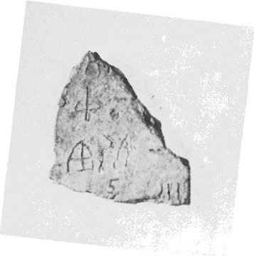
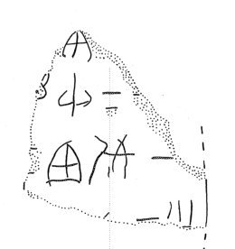

-
HT5
Names
HT5, HT 5
Support
Tablet
Location
Haghia Triada
Findspot
Portico 11 and Room 13


Scribe
HT Scribe 1
Context
Late Minoan IB
1500-1450 BCE
Dimensions
Catalogue
Hiraklion Museum
Readings
1 1 0 *307 certain
2 2 1 MA doubtful
2 2 1 SI certain
2 2 2 30 certain
3 3 3 WI certain
3 3 3 DU certain
3 3 4 10 certain
𐙛
𐙁𐘤𐄒
𐘣𐘬𐄐
*307
MASI30
WIDU10
𐙛
𐙁𐘤𐄒
𐘣𐘬𐄐
*307
MASI30
WIDU10
HT
5
, page tablet (HM 50) (GORILA I: 10-11)
HT
Scribe 1?
|
side.line
|
statement
|
logogram
|
number
|
fraction
|
|
|
|
supra mutila
|
|
|
|
.1
|
|
]*307[
|
|
|
|
.2
|
]
MA
-SI
|
|
30
[
|
|
|
.3
|
]-WI-DU
|
|
10
[
|
|
|
.4
|
|
]vest.[
|
|
|
|
|
|
infra mutila
|
|
|
.4 or: ]
vest.
over [[ ]]; ]-3 or ]-SE
Commentary © John Younger
References
papers/GORILA-Vol1.pdf#page=46